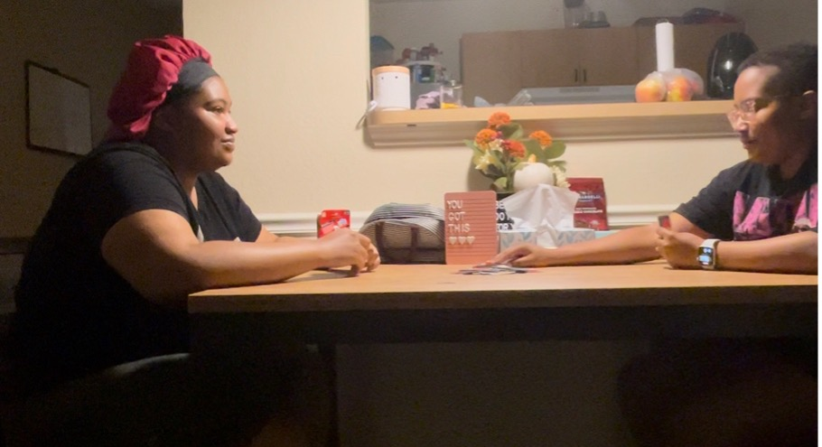
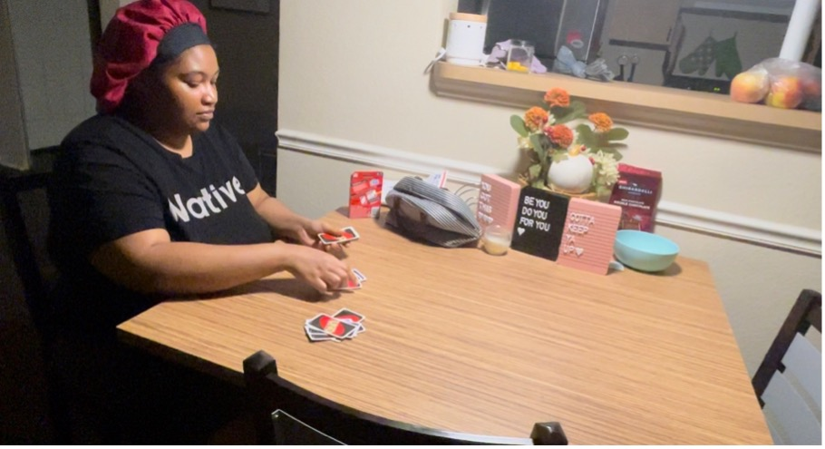
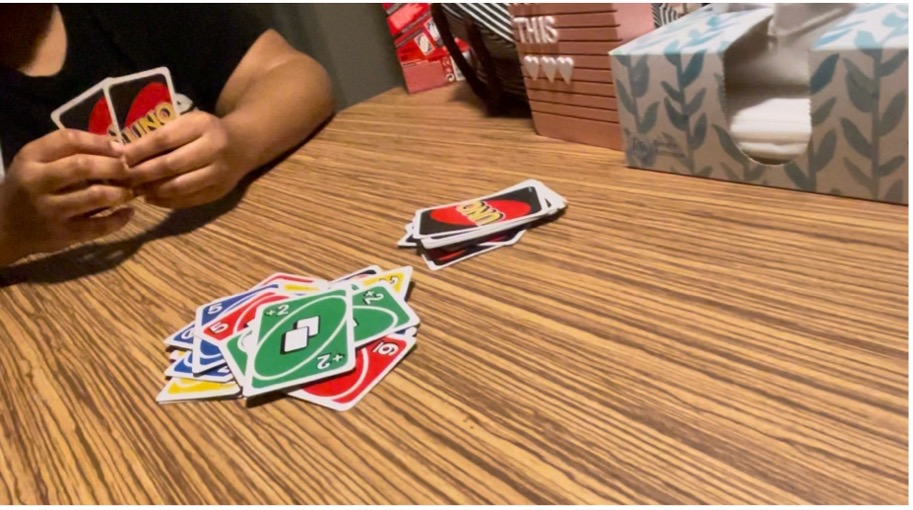
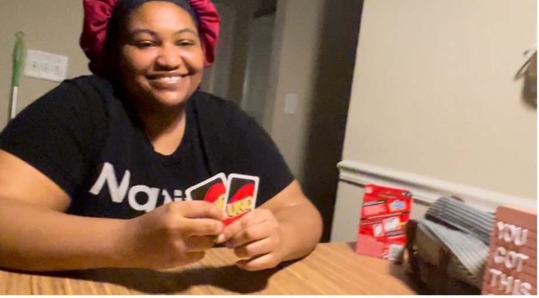
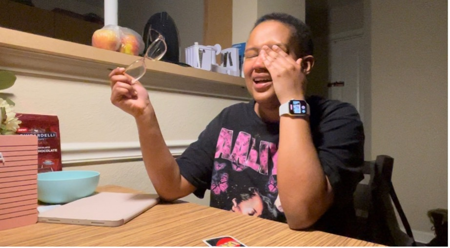

After a day full of tiring and stressing work, many college students just desire a to take a break or have some fun to relax their mind. That was the intention when Nia and Kyra sat down to pay Uno together; but it clearly left one in tears.

Two friends, Kyra (Left) and Nia (Right) sit at the kitchen table to play cards together. Kyra, although has chosen and at first seemed enthusiastic, reveals she doesn’t know how to play Uno.

Kyra takes the deck and deals cards for each player. According to the rules, each player is to be dealt seven cards.

Uno cards lay on top of each other in a pile. The stacking and layering of the same card over and over can result in a player picking up multiple cards.

In reaction to the cards she played, Kyra laughs at Nia’s reaction. Being the underdog, Kyra did not expect to win.

So much laughter all at once can cause crying. Nia wipes tears from her eyes.
Unsatisfied with the outcome of the game, Nia (Right) points her finger. Kyra (Left) smirks in response.